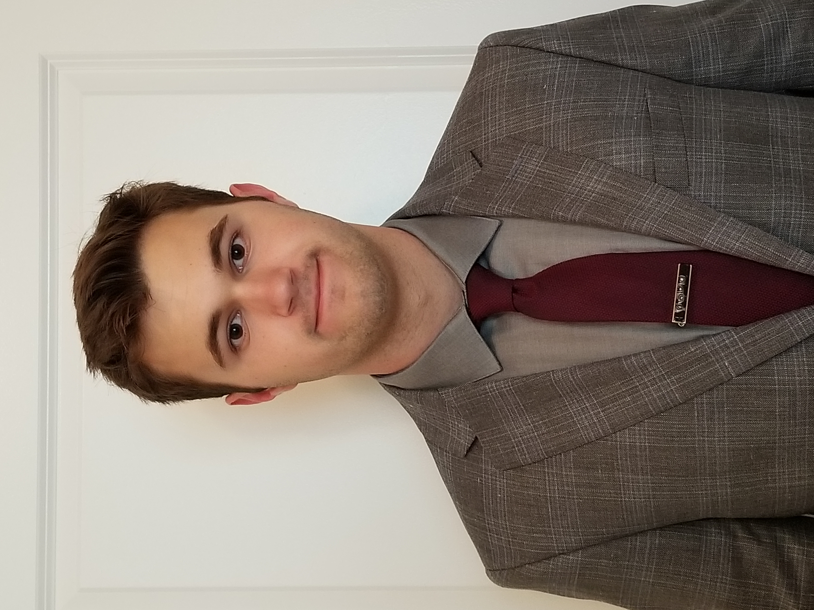

300 Webb Street, Apartment 401
Blacksburg, VA 24060
Telephone: (703) 309-9045
Email: silvasym@vt.edu
LinkedIn Profile Objective
A position in Computer Science.
Education
B.S. in Computer Science, Virginia Tech, Blacksburg VA, 24060 (May 2021)
Minor: Mathematics
Experience
Cashier, Harris Teeter (April 2018 - August 2019)
42780 Creek View Plaza Ashburn, VA 20147Door Dash (May 2020 - July 2020)
Achievements
Eagle Scout (December 2016)
Dean's List (Fall 2017)